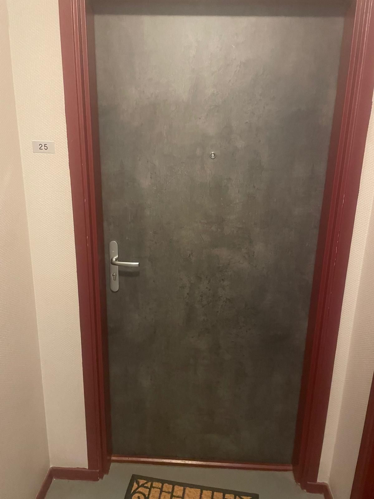
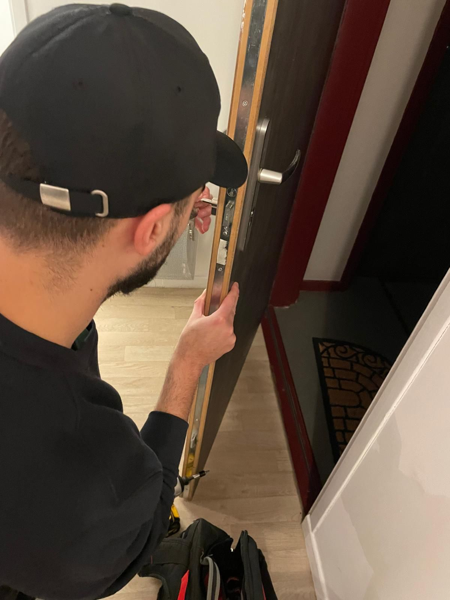

Besoin d'un serrurier en urgence
Disponible 24H/24, 7J/7 ?
à partir de 39 €
de votre domicile
Besoin d'un serrurier en urgence
Disponible 24H/24, 7J/7 ?
à partir de 39 €
Vous êtes bloqué devant votre porte ? Vous avez perdu vos clés ou votre serrure est endommagée ? Notre service de dépannage d'urgence en serrurerie est à votre disposition 24h/24 et 7j/7 à Valenciennes et ses alentours. Nous intervenons rapidement, avec un délai moyen de seulement 20 minutes, pour vous aider à retrouver l'accès à votre domicile ou à sécuriser vos biens.
Nos serruriers professionnels sont équipés pour gérer tous types de situations, qu'il s'agisse d'une porte claquée, d'une clé cassée dans la serrure ou d'une effraction. Faites confiance à notre expertise pour un service rapide, fiable et abordable, où que vous soyez dans la région valenciennoise.
Toutes nos
interventions sont
garanties 2 ans
Nous sommes fiers d'être agréés par toutes les assurances, offrant ainsi à nos clients la tranquillité d'esprit qu'ils méritent.
Je vous propose une intervention en serrurerie complète : diagnostic, devis immédiat et gratuit, et suivi personnalisé. Mes services couvrent l'ouverture de portes, le remplacement de serrures et cylindres, jusqu'à l'installation de rideaux métalliques et volets roulants, le tout avec une approche soignée pour votre tranquillité.
Assurez la sécurité de votre domicile avec un remplacement de cylindre adapté à vos besoins de sécurité.

Redonnez fonctionnalité et sécurité à vos serrures endommagées grâce à notre service de réparation expert.
Avant l’intervention
Après l’intervention
Accédez rapidement à votre domicile sans dommage avec notre technique d'ouverture de porte non destructive.
Perte accidentelle ou une urgence, mon expertise vous assure une solution rapide et fiable, avec un respect total de vos besoins et de votre tranquillité.
Le tarif varie selon l'intervention : à partir de 39€ pour une ouverture de porte simple. Devis gratuit par téléphone avant intervention.
Oui, nous sommes disponibles 24h/24 et 7j/7 pour tous vos dépannages d'urgence, même les jours fériés.
Ne forcez pas ! Contactez-nous immédiatement. Nos techniciens ouvrent votre porte sans casse dans la plupart des cas.
Oui, nous établissons un devis gratuit avant toute intervention. Aucune surprise sur la facturation.
Nous acceptons les espèces, chèques, cartes bancaires et virements. Facture fournie pour les assurances.
Oui, nous intervenons sur Valenciennes et toute la métropole : Valenciennes, Maubeuge, Saint-Amand, Le Quesnoy, Denain, Somain, Quiévrechain, Cambrai
Oui, nous sommes assurés décennale et nos techniciens sont certifiés. Interventions conformes aux normes A2P.
Contactez d'abord la police, puis appelez-nous. Nous sécurisons votre domicile et remplaçons immédiatement votre serrure endommagée.
Nous travaillons exclusivement avec des marques reconnues pour leur fiabilité et leur résistance afin de garantir la meilleure sécurité à nos clients.
Découvrez les avis de nos clients satisfaits concernant nos services de serrurerie à Valenciennes. Nous nous engageons à fournir des interventions rapides et efficaces pour garantir votre sécurité.